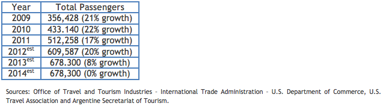

Market Estimates
Overview
Sub-Sector Best Prospects
Opportunities

Traveling is part of the Argentine lifestyle and the U.S. is a popular destination for both business and pleasure. Based on the most recent figures travel to the U.S. is up 19.2 percent January to November 2012, compared to the same period in 2011. Although Argentine tourism has grown at double digit rates over the past years, growth in 2013 could slow due to GOA restrictions on the purchase of foreign currency and taxes on airline tickets to non-Argentine destinations and credit card charges made by Argentine tourists when overseas. During 2014, many Argentines will likely choose Brazil as a travel destination due to its proximity as well as to attend the popular FIFA World Cup (Copa Mundial de Furbol) hosted by Brazil.
The Commerce Department’s Bureau of Economic Analysis estimates that Argentines spend $5,000 per person on travel expenses to the U.S. (including airfare generated by U.S. carriers). This comes as good news for travel agents, airlines, destinations, hotel managers, and many other travel service providers.
The number of travelers varies seasonally. Peak travel times tend to be during the summer holidays (December-February) and winter school holidays (July) although some choose to travel during the week of September 21st, as many children receive a spring holiday then in addition to their other times off.
Return to Top
New tourism destinations are being actively promoted at major industry shows, and the business travel sector experienced substantial growth last year, as many Argentines are visiting trade shows and congresses in a wide variety of industry sectors.
Return to Top
The top destinations frequently visited by Argentines are Florida (especially Miami and Orlando), New York City, California, and Washington D.C. The U.S. gateways are Atlanta, Dallas, Houston, Miami, New York, and New Jersey (Newark Airport).
Return to Top